Oyun Odası 3B Modeli
Zemin kat planının sol alt odası, yapay zekâ ile üretilmiş referans görsele bakılarak Blender'da Python ile prosedürel olarak modellendi. Referansla karşılaştırabilir, modeli tarayıcıda döndürebilir ve farklı açılardan render'lara bakabilirsin.
Referans ve render

 Referans3B render
Referans3B render
Referans3B render
Referans3B render
Modeli döndür
Diğer açılar
Aynı model, aynı ışık · Cycles 256 örnek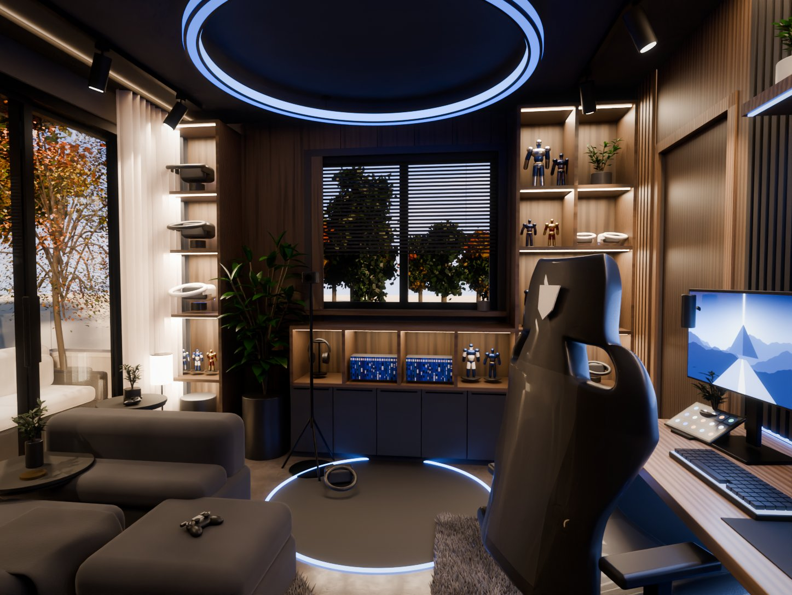
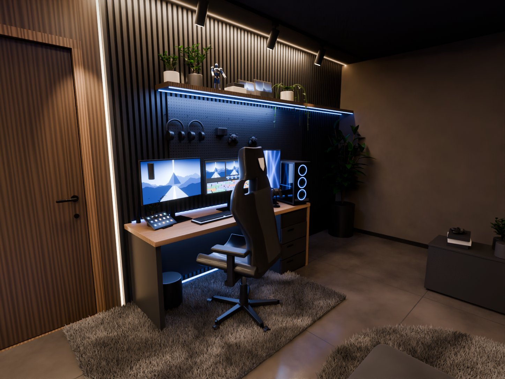
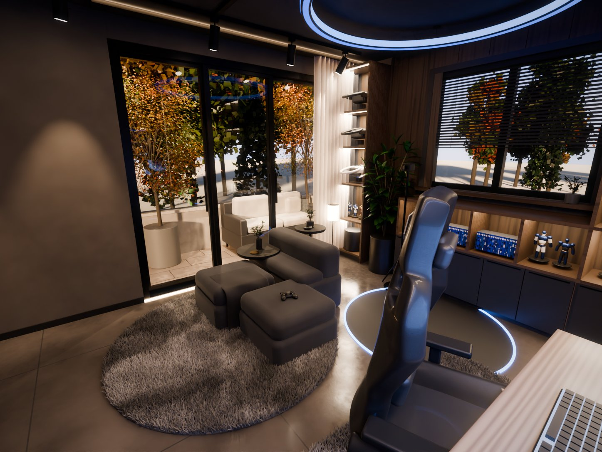
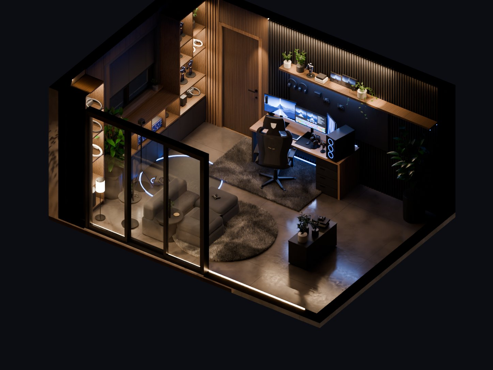
Referansa oturanlar
- Plan ölçüleri: oda 5,24 × 3,63 m; pencere, sürgülü cam ve kapı plandaki yerinde
- Kamera, referanstaki 16 noktaya en küçük kareler ile eşlendi
- Jaluzili pencere ve arkasında aydınlık ağaç sırası, cam ardında teras
- Geometry Nodes ile yaklaşık 150 bin telli tüylü halılar
- Yarış koltuğu, üç monitör, fanlı PC, pegboard, ışıklı raflar, figürler, VR köşesi
- Sıcak spot ve LED ışığı baskın, mavi yalnızca aksan
Bilinçli sapmalar
- AI görseldeki oda plandan ~%20 geniş; plan esas alındı, kadraj buna göre biraz daha sıkışık
- Pencere planda 126 cm, görsele yaklaşmak için 151 cm yapıldı
- Teras planda 91 cm derinlikte; dış kanepe buna sığacak boyutta
- Ön plandaki alçak dolap referanstaki kompozisyonu korumak için odanın ortasında
İterasyonlar
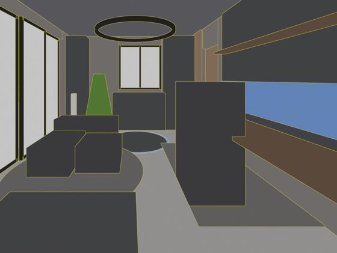
01Kaba kütle. Kutu bloklar ve ilk kamera tahmini.
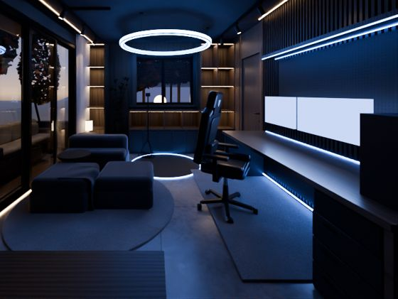
02İlk Cycles render. Malzemeler, gömme dolaplar, LED'ler. Fazla mavi.
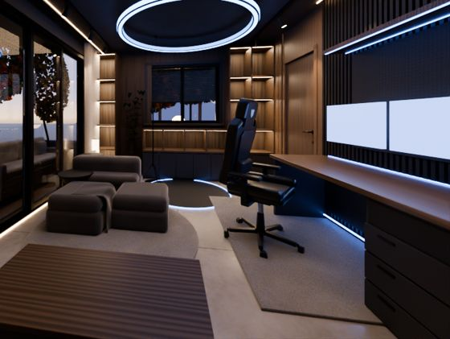
04Kamera çözümü. Pencere, kapı ve cam noktalarıyla en küçük kareler.
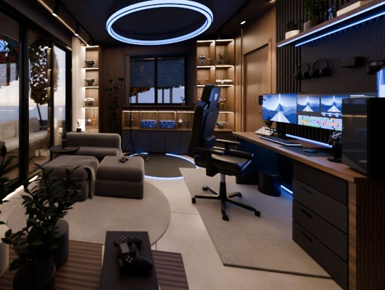
05Aksesuarlar. Monitör, PC, figürler, raf içerikleri.
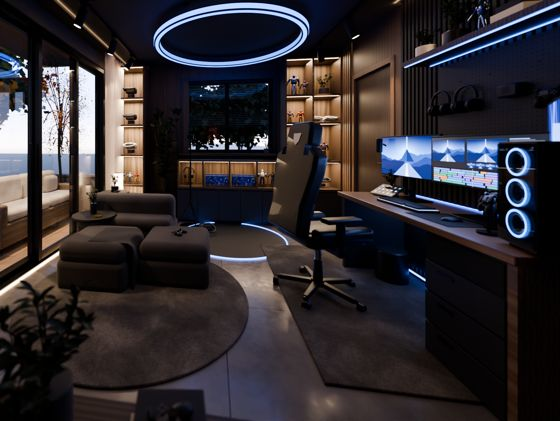
08Işık kalibrasyonu. Bölge bazlı renk ölçümüyle ayar.
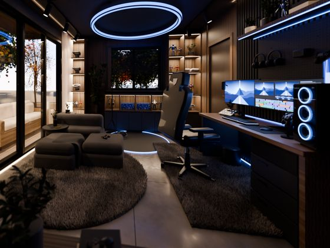
11Tüylü halılar. Geometry Nodes tel instance'ları.
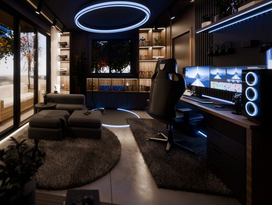
13Yeni koltuk. Kanatlı kabuk, LED parlama efekti.
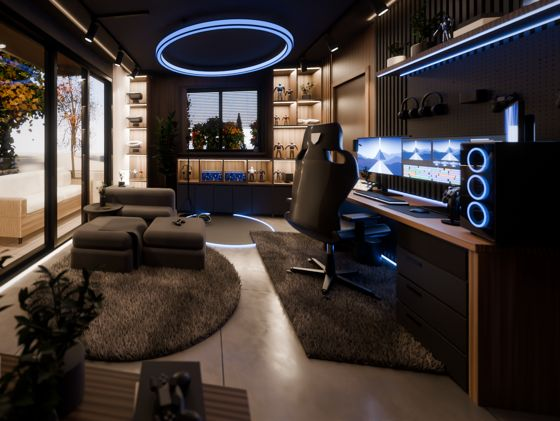
16Ağaç sırası. AgX renk ayarı, 15,4 mm objektif.
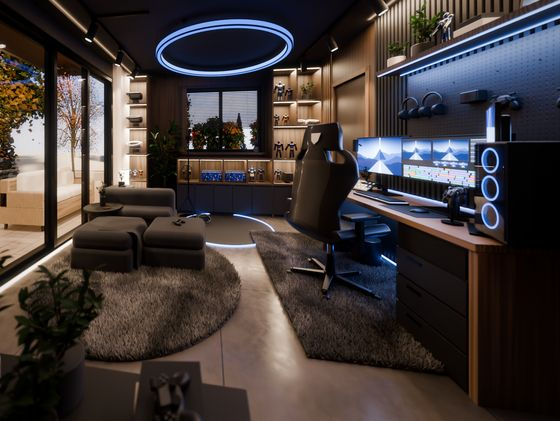
17Detay. İri figürler, gür bitki, pegboard ışığı.
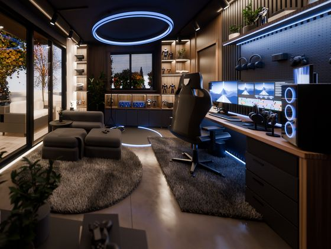
18Final. Masa düzeni, bulutlu gökyüzü, koyu zemin.
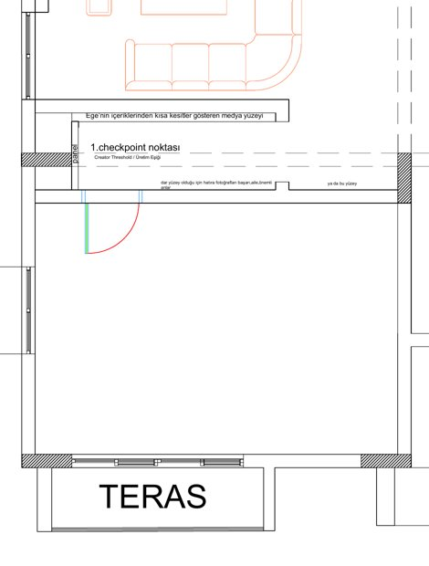
Model ve render bilgisi
- Oda
- 5,24 × 3,63 m, tavan 2,65 m
- Açıklıklar
- Sürgülü cam 2,48 m · pencere 1,51 m · kapı 0,78 m
- Kamera
- x 4,73 · y 1,74 · z 1,22 m, 8,7° sapma, 15,4 mm
- Sahne
- ~1.600 obje, tamamı Python ile prosedürel; malzemeler node tabanlı
- Render
- Blender 5.2 Cycles, RTX 2050 OptiX, 1447 × 1087
- Renk
- AgX Medium High Contrast, +1,1 pozlama, hafif bloom